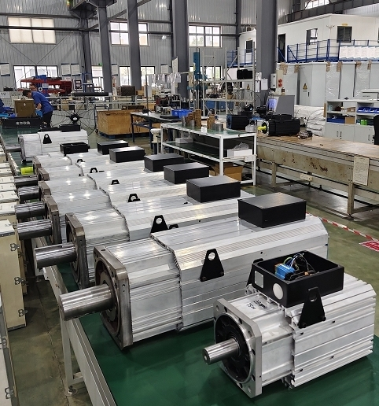
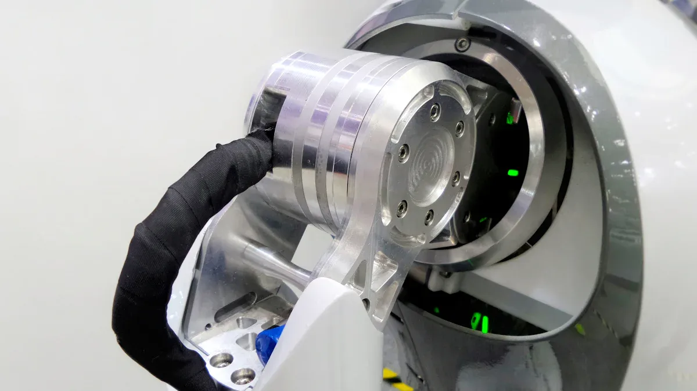
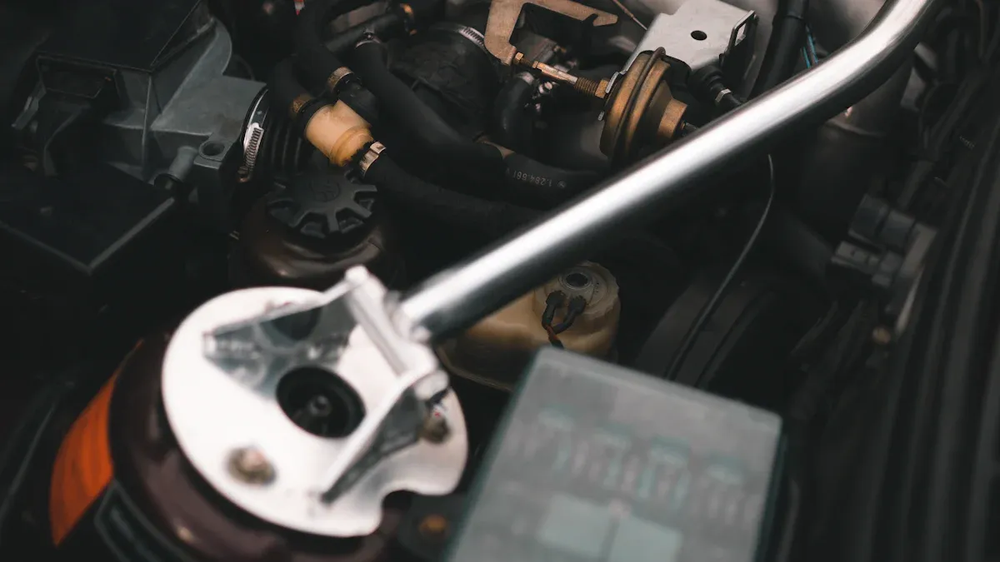

Industrial News

Steps to Optimize Your AC Servo Motor Setup

Optimizing your AC servo motor setup can significantly enhance performance. I’ve learned that factors such as friction uncertainties and mechanical vibrations play a crucial role in efficiency. For instance, friction modeling and robust control design are essential for maintaining stable operation. Additionally, advanced vector and servo drive technologies improve energy efficiency by adapting to load changes and minimizing energy waste. By focusing on these elements, I can ensure my AC servo motor system operates at its best.
Key Takeaways
- Install your AC servo motor in a clean, well-ventilated area with stable temperature and low humidity to prevent damage and improve lifespan.
- Use shielded, short cables and proper grounding to reduce electrical noise and ensure reliable motor operation.
- Choose the right motor type and size by matching its speed, torque, and inertia to your specific application needs for better efficiency.
- Select the best control mode—position, speed, or torque control—to improve accuracy and energy use based on your task requirements.
- Perform regular cleaning and firmware updates to keep your motor running smoothly and protect it from faults and security risks.
Proper Installation and Commissioning of AC Servo Motor

When I set up an AC servo motor, I prioritize proper installation and commissioning. This step is crucial for ensuring optimal performance and longevity. I’ve learned that environmental factors and wiring practices significantly impact the effectiveness of my setup.
Environmental Considerations
The environment where I install my AC servo motor can make or break its performance. Here are some key factors I always consider:
- Temperature: I ensure that the installation site maintains a temperature between 0°C and 50°C (32°F to 122°F). Extreme temperatures can lead to overheating or damage to the motor components.
- Humidity: I avoid environments with high humidity levels, as moisture can cause corrosion and electrical failures. Keeping humidity between 26% and 80% (non-condensing) is ideal.
- Ventilation: Good airflow is essential. I make sure there’s adequate ventilation around the motor to prevent overheating. I also avoid placing the motor in areas with flammable gases, dust, or moisture.
- Vibration: I install the motor on a solid foundation to minimize vibrations. Excessive vibrations can lead to mechanical stress and premature wear.
By adhering to these environmental considerations, I can significantly enhance the reliability and lifespan of my AC servo motor.
Wiring Best Practices
Wiring is another critical aspect of my AC servo motor setup. I follow these best practices to minimize electrical noise and ensure reliable operation:
- Use Shielded Cables: I always opt for shielded cables grounded at one end. This practice helps reduce electrical noise and prevents ground loops.
- Keep Cable Lengths Short: I minimize cable lengths and avoid coiling or looping them. Shorter cables reduce signal loss and improve performance.
- Segregate Power and Signal Cables: I maintain maximum distance between power cables and signal cables to prevent electromagnetic interference (EMI).
- Proper Grounding: I ensure that all components are properly grounded, with grounding resistance below 100Ω. This step is crucial for effective noise reduction.
- Regular Inspections: I routinely check wiring and connectors to avoid signal loss or malfunction. This proactive approach helps prevent electrical failures.
By following these wiring best practices, I can enhance the performance of my AC servo motor and reduce the risk of failures caused by wiring errors.
Motor Selection and Matching for AC Servo Motor
Selecting the right AC servo motor is crucial for achieving optimal performance in my applications. I’ve found that understanding the different types of AC servo motors and matching their ratings to my specific needs can make a significant difference.
Types of AC Servo Motors
In my experience, there are two main types of AC servo motors: synchronous and induction. Each type serves different purposes:
- Synchronous AC Motors: These motors use permanent magnets and operate at a precise speed. I often choose them for applications requiring high accuracy, such as factory robots and precision tools.
- Induction AC Motors: These motors are asynchronous and are known for their robustness. I typically use them in heavy-duty applications like industrial fans and pumps.
Understanding these types helps me select the right motor for my specific needs.
Matching Motor Ratings to Application
When matching motor ratings to my application, I consider several key criteria. Here’s a list of factors I always evaluate:
- Load Type: I determine if the load requires constant or variable torque. This helps me select the appropriate motor characteristics.
- Speed Requirements: I assess whether I need constant or variable speed. This decision guides my motor and drive selection.
- Inertia Ratio: I aim for a load inertia to motor inertia ratio of 30:1 or lower. This ensures better motor response and control.
- Performance Specifications: I match the motor’s shaft speed, torque, and efficiency to my load requirements. This step is vital for maintaining system performance.
By carefully considering these factors, I can avoid common pitfalls. For instance, using an oversized motor can lead to excess energy losses and increased operational costs. I’ve learned that maintaining the right balance between motor size and application demands is essential for efficiency.
Control Mode Optimization for AC Servo Motor
Optimizing control modes is essential for enhancing the performance of my AC servo motor setup. I’ve discovered that selecting the right control mode can significantly impact both energy efficiency and accuracy. Here’s how I approach the three main control modes: position control, speed control, and torque control.
Position Control Techniques
Position control is crucial for applications requiring precise movement. I often use the following techniques to achieve optimal positioning:
-
Closed-Loop Control: This method uses feedback devices like encoders to monitor the motor's position continuously. It allows me to adjust the motor's actions in real-time, ensuring accuracy. The three-loop PID control system plays a vital role here:
- Current Loop: This innermost loop controls torque with the fastest response.
- Speed Loop: It regulates speed using encoder feedback, which feeds into the current loop.
- Position Loop: This outermost loop ensures precise positioning, involving the most computation and slowest response.
-
Advanced Control Strategies: I’ve noticed that integrating adaptive control and artificial intelligence methods can enhance performance. These strategies allow my system to learn and adapt to varying conditions, improving overall efficiency.
-
Universal Servo Drives: I often opt for drives that support multiple motor types and control methods. This flexibility allows me to switch between closed-loop and semi-closed-loop control as needed.
By implementing these position control techniques, I can achieve high precision and reliability in my applications.
Speed Control Strategies
Speed control is another critical aspect of optimizing my AC servo motor setup. I typically employ the following strategies:
-
Variable Frequency Drives (VFDs): These are my go-to for controlling speed. VFDs adjust both voltage and frequency, allowing for precise and efficient speed control. They are particularly effective in manufacturing applications where maintaining exact speed is crucial.
-
Feedback Devices: I rely on encoders for closed-loop control, which enables precise speed regulation. This capability is essential in applications like CNC machines and robotics, where accuracy is paramount.
-
Advanced Control Techniques: I often use Vector Control and Direct Torque Control (DTC) for fine-tuned performance, especially at low speeds. These methods enhance dynamic performance and energy savings.
By focusing on these speed control strategies, I can ensure that my AC servo motor operates efficiently and accurately.
Torque Control Methods
Torque control is vital for applications requiring real-time adjustments. I’ve learned that different AC servo motor models offer various torque control characteristics:
-
Direct Torque Control: This method provides the fastest dynamic response. It allows me to control torque directly, making it ideal for applications like winding devices.
-
Feedback Systems: Most AC servo motors use feedback and commutation techniques for torque regulation. This approach minimizes torque ripple and enhances performance.
-
Torque Motors: I also consider using torque motors for specific applications. These motors control torque by varying input voltage, allowing them to provide full torque at zero speed.
By understanding and applying these torque control methods, I can optimize the performance of my AC servo motor setup.
Regular Maintenance and Inspection of AC Servo Motor
Regular maintenance and inspection of my AC servo motor are essential for ensuring its longevity and performance. I’ve found that implementing effective cleaning procedures and keeping firmware up to date can make a significant difference.
Cleaning Procedures
I prioritize cleanliness in my AC servo motor setup. Here are the cleaning procedures I follow to prolong its lifespan:
- Keep the Area Clean: I ensure that the surrounding area remains free from dust and debris. This practice prevents contaminants from entering the motor.
- Clean Ventilation Ducts: I regularly clean ventilation ducts, fans, and heat sinks. This step maintains unobstructed airflow, which is crucial for preventing overheating.
- Lubrication Care: During lubrication, I maintain a clean environment to avoid introducing dirt. I also avoid over-lubrication, as it can damage seals and attract contaminants.
- Use Recommended Lubricants: I always use manufacturer-recommended lubricants and adhere to relubrication intervals. This practice helps maintain optimal performance.
By following these cleaning procedures, I can significantly reduce wear and tear on my AC servo motor.
Importance of Firmware Updates
Keeping the firmware updated is another critical aspect of my maintenance routine. I’ve learned that regular updates can enhance both performance and security. Here’s why I prioritize firmware updates:
- Optimized Operation: Firmware updates improve motor operation, leading to smoother function and increased energy efficiency.
- Security Patches: They address security vulnerabilities, protecting my AC servo motor system from potential cyber threats.
- Bug Fixes: Updates fix bugs and enhance system stability, ensuring reliable performance.
- New Features: I can gain access to new features, such as support for advanced communication protocols and diagnostic tools.
I make it a point to track firmware versions and test updates in non-critical environments. This proactive approach minimizes risks and ensures compatibility with my existing systems.
By implementing these maintenance practices, I can keep my AC servo motor running efficiently and reliably.
Monitoring and Troubleshooting AC Servo Motor
Monitoring and troubleshooting my AC servo motor setup is essential for maintaining optimal performance. I rely on various performance monitoring tools to keep track of my motor's health and efficiency.
Performance Monitoring Tools
I’ve found that advanced monitoring systems play a crucial role in early fault detection. For instance, tools like AutomationDirect's SureServo2 and LS Electric servo drives come equipped with integrated diagnostics and oscilloscope functions. These features allow me to monitor command signals and operating values effectively. The built-in oscilloscope functionality, with multiple channels, provides detailed insights into performance, helping me troubleshoot timing issues efficiently.
Additionally, Rockwell Automation's Kinetix series offers servo drives and motors with integrated motion control and encoder options. These systems provide rich motion data, enabling precise monitoring and control. The combination of these tools ensures that I can detect anomalies before they escalate into significant problems.
Tip: Regularly check parameters such as temperature, vibration, and power consumption. Unusual readings can indicate potential issues, allowing me to address them proactively.
Common Troubleshooting Techniques
When I encounter issues with my AC servo motor, I follow a systematic approach to troubleshooting. Here are some common techniques I employ:
- Verify Wiring Connections: I always start by checking the wiring. Loose or damaged connections can lead to erratic behavior.
- Inspect Power Supply: Ensuring the correct voltage supply is crucial. I check for any fluctuations that might affect performance.
- Check for Mechanical Issues: I look for signs of wear or misalignment in the motor and load. Excessive vibrations or unusual noises often signal mechanical problems.
- Use Diagnostic Software: Tools like Yaskawa's DriveWizard help me monitor real-time data and adjust parameters as needed. These tools are invaluable for identifying misconfigured settings.
| Error Type | Symptoms | Common Causes | Troubleshooting Techniques |
|---|---|---|---|
| Overvoltage Error | Drive shows overvoltage fault code | Excessive power supply voltage | Check power supply voltage; install braking resistor; adjust deceleration settings |
| Undervoltage Error | Drive shows undervoltage fault | Power drop, faulty power supply components | Inspect power supply stability; check wiring; verify input voltage requirements |
| Overcurrent Error | Overcurrent fault code | Mechanical binding, short circuits | Inspect motor/load for obstructions; check wiring for shorts; ensure motor-drive current compatibility |
By employing these techniques, I can quickly identify and resolve issues, ensuring my AC servo motor operates smoothly.
In summary, I’ve learned that optimizing my AC servo motor setup involves several key steps. I focus on proper installation, selecting the right motor, optimizing control modes, and conducting regular maintenance. Each of these practices contributes to improved performance and efficiency.
I encourage you to implement these strategies in your own setups. By doing so, you can enhance the reliability and longevity of your AC servo motor systems.
Feel free to share your experiences or ask questions in the comments below. I’m eager to hear how these tips have worked for you!